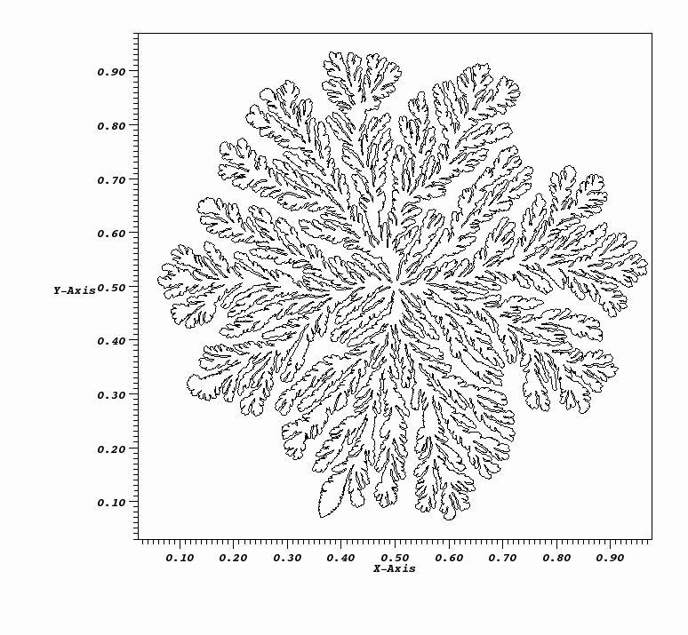

Subsurface Flow
Next Generation Subsurface Flow Codes Using Unstructured Grids and Front-tracking
ITAPS Personnel: Xiaolin Li (SUNY SB), Harold Trease (PNNL)
Subsurface Personnel: Tim Schiebe (PNNL)
Project Status: Active
Subsurface transport codes, such as the STOMP code developed at PNNL, are used for simulating the flow and transport of multi-scale, multi-phase components (fluids, gases, and reactive species) through complex underground structures. DOE applications of these codes include modeling remediation strategies for the cleanup of heavy metal radioactive waste and the design and study of carbon sequestration strategies in subsurface repositories. In collaboration with the ``Hybrid Numerical Methods for Multiscale Simulations of Subsurface Biogeochemical Processes'' SciDAC project, the ITAPS team is developing new techniques for the next generation of subsurface transport codes in two ways. First, we are developing a new code that combines the STOMP subsurface transport code formulations with ITAPS unstructured mesh capabilities to capture complex subsurface topology such as intersecting layers and faulted structures. We have been working closely with the STOMP team to define the best way to map a library of unstructured STOMP mesh primitives onto the ITAPS mesh interface which has been implemented in NWGrid/NWPhys. In our second activity with PNNL scientists, we are using the the FronTier front-tracking library to simulate reactive transport and mineral precipitation in fractured and porous media. Our research suggests that these techniques will be more cost effective than the standard Smooth Particle Hydrodynamics (SPH) approach, and we will compare the two methods for accuracy and computational cost. We have made good progress on modeling the reactive deposition of minerals on the rock surface using FronTier. The Figure below shows the solute concentration in a 2D simulation of crystal growth. The comparison has shown that the front tracking method gives good agreement with the SPH method in 2D when the effect of curvature is considered. Currently, we are carrying out 3D validations.
|  |
|---|